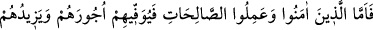
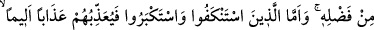
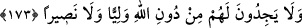

173- İman edip sâlih amel işleyenlere (Allah) ecirlerini tam olarak verecek ve
onlara lütfundan daha fazlasını da ihsan edecektir. Kulluğundan yüz çeviren ve
kibirlenenlere gelince onlara acı bir şekilde azap edecektir. Onlar, kendileri için
Allah’tan başka ne bir dost ve ne de bir yardımcı bulurlar.
Allah, “îman edip sâlih ameller işleyenlere ecirlerini” amellerinin mükâfâtlarını hiç
bir şey eksiltmeksizin “tam olarak verecek ve onlara lütfundan daha fazlasını da
ihsan edecektir.” Onları hiç bir gözün görmediği, hiç bir kulağın işitmediği, hiç bir
beşerin gönlüne düşmeyen mükâfâtlarla ödüllendirerek kat kat fazlasını verecektir.
Allah Teâlâ’ya kulluktan “yüz çeviren” ve “kibirlenenlere gelince onlara”
büyüklenmeleri ve yüz çevirmeleri sebebiyle, tasvîri mümkün olmayan “acı bir şekilde
azap edecektir. Onlar, kendileri için” işlerine bakacak ve idâre edecek “Allah’tan
başka ne bir dost ve ne de” kendilerini Allah’ın azabından kurtaracak “bir yardımcı
bulurlar.”
Meleklerin, peygamberlerden üstün olduğunu iddiâ edenler bu âyeti delil göstermişler
ve şöyle demişlerdir: Âyet Hz. Mesih’in, kul olmadığını söyleyen hristiyanları
reddetmek için getirilmiştir. Dilbilgisi kuralına göre âyette ma‘tûf olan Allah’a yakın
meleklerin, ma‘tûfun aleyh olan Îsâ (a.s)’dan üstün olması gerekir. Böylece meleklerin
Allah’a kulluktan yüz çevirmemeleri, Hz. Îsâ’nın da yüz çevirmemesini gerekli kılar.
Bu iddiâya benim vereceğim cevap şudur: Hristiyanların küfre düşmelerinin ve Îsâ
(a.s)’ın kulluk rutbesinden ilahlık rutbesine yükseltmelerinin dayanağı, Hz. Îsâ’nın diğer
insanlardan farklı olarak babasız olarak dünyâya gelmesi, gaybdan haber vermesi ve
semâya yükseltilmesi ile temâyüz etmesi ve özel kılınmasıdır. Îsâ (a.s)’ın Allah’a
kulluktan yüz çevirmemesine, yukarıda onunla ilgili olarak zikredilen hususlarda
dereceleri daha yüksek olan meleklerin de Allah’a kulluktan yüz çevirmemeleri
atfedilmiştir. Çünkü melekler, hem babasız hem de annesiz yaratılmışlardır. Gaybdan
insanların bilmediği şeyleri bilirler. Onların makamı, yüksek semâlardadır. Bu
bakımdan meleklerin derecelerinin yüksek olması hakkında münâkaşa eden yoktur. Asıl
münâkaşa ibâdet ve tâatlere verilecek sevabın çokluğu bakımından kimin derecesinin
yüksek olduğu hakkındadır. Bu kısım, Ebü’s-Suûd Efendi’nin İrşâdü’l-akli’s-selîm adlı
tefsîrinden alınmıştır.
et-Te’vîlâtü’n-Necmiyye’de şöyle denilmiştir: Âyette Allah’a yakın melekler, Hz.
Mesih üzerine atfolunması, onlar Hz. Îsâ’dan daha fazîletli oldukları için
zikredilmemiştir. Ancak onların zikredilmesi, hristiyanların “Mesih Allah’ın oğludur.”